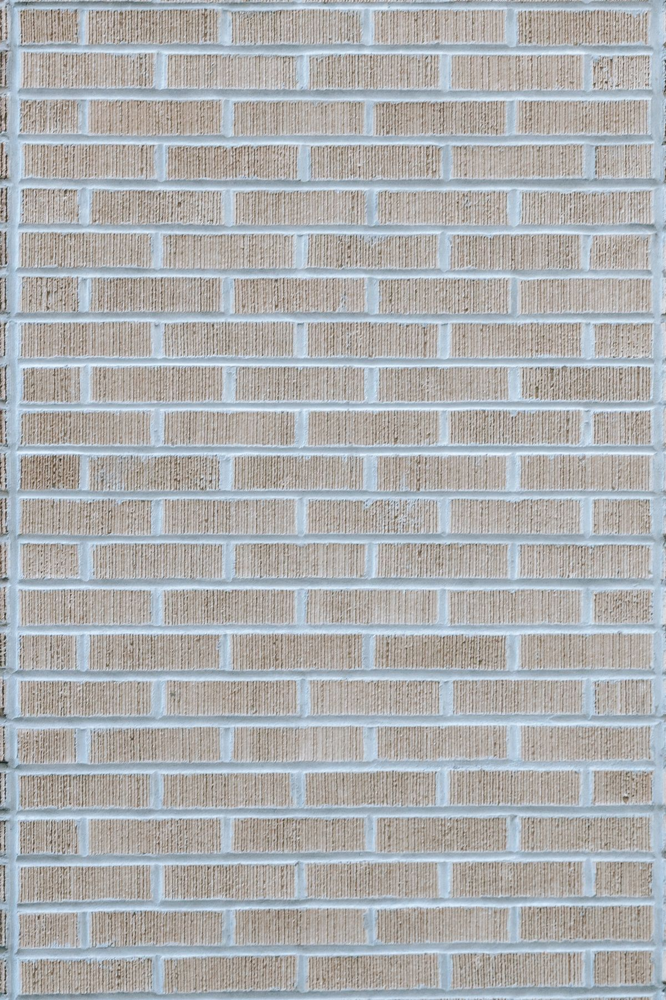
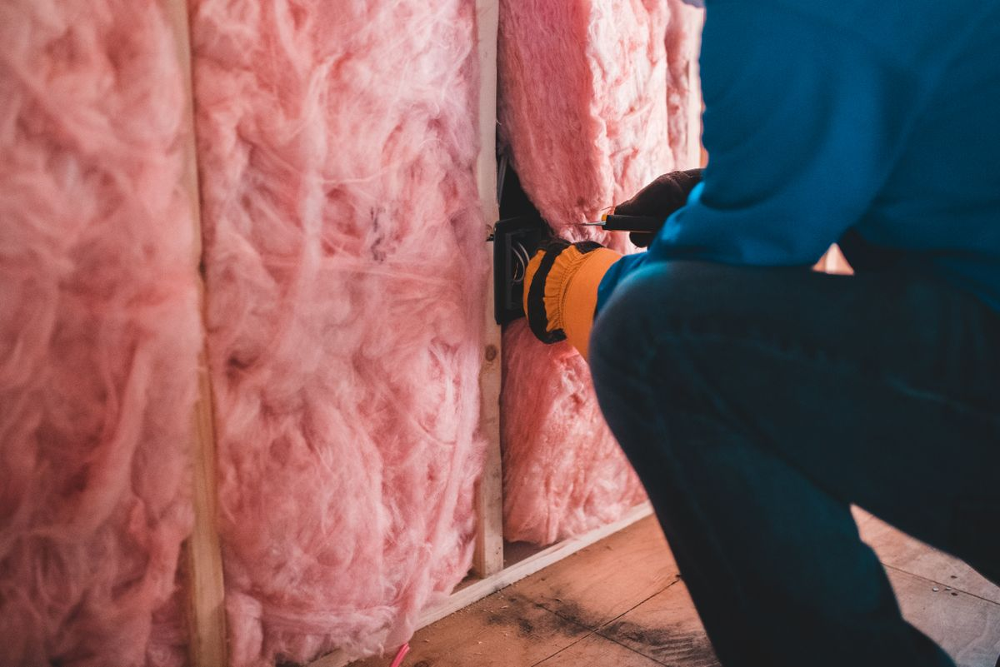

Справочная статья
Справочная статьяГазобетон: тёплая стена без утеплителя?
Марки плотности D300–D600, теплопроводность и прочность газобетонных блоков.
Свойства
Способность материала передавать тепло, Вт/(м·К). Чем меньше, тем теплее материал.
Другие названия: коэффициент теплопроводности, лямбда, тёплый материал
Учебный каталог; условия измерения и паспорт не указаны. Это не проектные характеристики.
| Изделие | Атрибут | Значение | Единица | Источник |
|---|---|---|---|---|
| Кирпич керамический М150 | Теплопроводность | 0.5 | Вт/(м·К) | Учебный каталог |
| ГКЛ Стандарт 12.5 мм | Теплопроводность | 0.21 | Вт/(м·К) | Учебный каталог |
| Минеральная вата Лайт | Теплопроводность | 0.04 | Вт/(м·К) | Учебный каталог |
| Металлочерепица Монтеррей | Теплопроводность | 50.0 | Вт/(м·К) | Учебный каталог |
| Брус строительный 150x150 | Теплопроводность | 0.15 | Вт/(м·К) | Учебный каталог |
| Газобетонный блок D500 600x300x200 | Теплопроводность | 0.12 | Вт/(м·К) | Учебный каталог |
| Газобетонный блок перегородочный D500 600x100x200 | Теплопроводность | 0.12 | Вт/(м·К) | Учебный каталог |
| Кирпич силикатный утолщённый М150 | Теплопроводность | 0.8 | Вт/(м·К) | Учебный каталог |
| Экструдированный пенополистирол XPS 50 мм | Теплопроводность | 0.03 | Вт/(м·К) | Учебный каталог |
| Пенополистирол ППС-15 100 мм | Теплопроводность | 0.04 | Вт/(м·К) | Учебный каталог |
| ГКЛВ влагостойкий 12.5 мм | Теплопроводность | 0.21 | Вт/(м·К) | Учебный каталог |
| Профнастил С20 0.5 мм | Теплопроводность | 50.0 | Вт/(м·К) | Учебный каталог |
Справочная статьяМарки плотности D300–D600, теплопроводность и прочность газобетонных блоков.

Справочная статьяКрупноформатные поризованные камни для однослойных стен.

Справочная статьяСвойства, плотность и области применения каменной ваты.
Простое объяснение коэффициента теплопроводности с таблицей значений.
Оконные откосы, перемычки и пояса: почему одного значения толщины утеплителя недостаточно.
Что показывает формула R = δ / λ и почему расчёт слоя не заменяет расчёт всей стены.